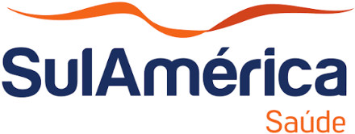

Planos de saúde · escolha orientada
Operadoras de saúde.
Compare com clareza.
Uma boa escolha combina o seu perfil, a rede que precisa e o orçamento. Conheça as operadoras e entenda o que conferir antes de pedir uma cotação.
Comece pela operadora. Escolha pelo plano.
Mesmo dentro de uma operadora, os produtos podem ter redes e condições diferentes. Abra a página da marca que está pesquisando para orientar a comparação.
Compare o produto, a rede desejada e as condições de reembolso quando previstas.
Conhecer Amil →Comece pelos hospitais e pelas unidades que fazem parte da sua rotina no Rio.
Conhecer Assim Saúde →Avalie a composição do grupo empresarial, a abrangência e o reembolso do produto.
Conhecer Bradesco Saúde →
Confira qual produto está disponível para sua modalidade e região de contratação.
Conhecer Hapvida NotreDame Intermédica →Liste suas prioridades de atendimento e confira a rede do produto proposto.
Conhecer Klini Saúde →Compare as opções para seu perfil com atenção à cobertura e às condições de utilização.
Conhecer Leve Saúde →
Considere suas necessidades de acompanhamento e os estabelecimentos que deseja utilizar.
Conhecer MedSênior →
Parta da sua rotina de cuidado para conferir produto, atendimento e abrangência.
Conhecer Prevent Senior →
Verifique a modalidade, a rede e as condições de livre escolha quando previstas.
Conhecer SulAmérica →Coloque as propostas lado a lado.
Compare para as mesmas pessoas e com as mesmas prioridades. O menor preço isolado não mostra todas as diferenças entre os planos.
Rede e abrangência
Hospitais, unidades, laboratórios e cidades. Confirme o atendimento incluído no produto específico.
Modalidade e ingresso
Individual, coletivo por adesão ou empresarial. Vínculos, composição do grupo e carências precisam estar claros.
Custo total
Mensalidade, coparticipação quando prevista e despesas particulares que continuarão com você.
Continuidade
Regras de reajuste, mudanças por idade, manutenção e condições de saída do contrato.
O seu grupo ajuda a definir os caminhos.
Para você e sua família
Não ter CNPJ não impede a avaliação. Confira as opções individuais e familiares ou por adesão, conforme os vínculos e a oferta disponível.
Conhecer os caminhos pelo CPF →Para titular, família ou equipe
Se tem CNPJ, informe a natureza da empresa e as pessoas que pretende incluir. Não aplique um único mínimo de vidas a todas as operadoras.
Conhecer o coletivo empresarial →Dúvidas antes de escolher uma operadora.
Você não precisa chegar com uma marca definida. Pode começar pelas pessoas e pelo atendimento que deseja.
Qual é a melhor operadora de plano de saúde?
Não há uma resposta única. Compare disponibilidade para seu perfil, rede do produto, cobertura, custo e condições contratuais.
Toda operadora oferece plano pelo CPF e pelo CNPJ?
Não presuma isso. A oferta pode variar por modalidade, perfil, região e produto. É preciso confirmar as opções disponíveis.
Uma operadora nacional tem todos os planos nacionais?
Não necessariamente. A abrangência pertence ao produto contratado. Confira também quais estabelecimentos atendem nas regiões importantes para você.
Qual operadora aceita uma ou duas pessoas?
É preciso conferir as regras comerciais vigentes, os vínculos do grupo e a região. O mínimo isolado não garante elegibilidade nem disponibilidade.
Posso manter meu hospital ao trocar de operadora?
Confira a unidade e o tipo de atendimento na rede do novo produto antes de decidir. A presença de um hospital em outra linha não garante acesso na proposta escolhida.
A Vortex é uma operadora?
Não. A Vortex é uma corretora que orienta a comparação e a contratação de planos. A cobertura e os serviços do contrato são de responsabilidade da operadora, conforme as condições aplicáveis.
Vamos encontrar opções para o seu perfil?
Uma comparação começa pelo seu perfil e pelas suas prioridades.